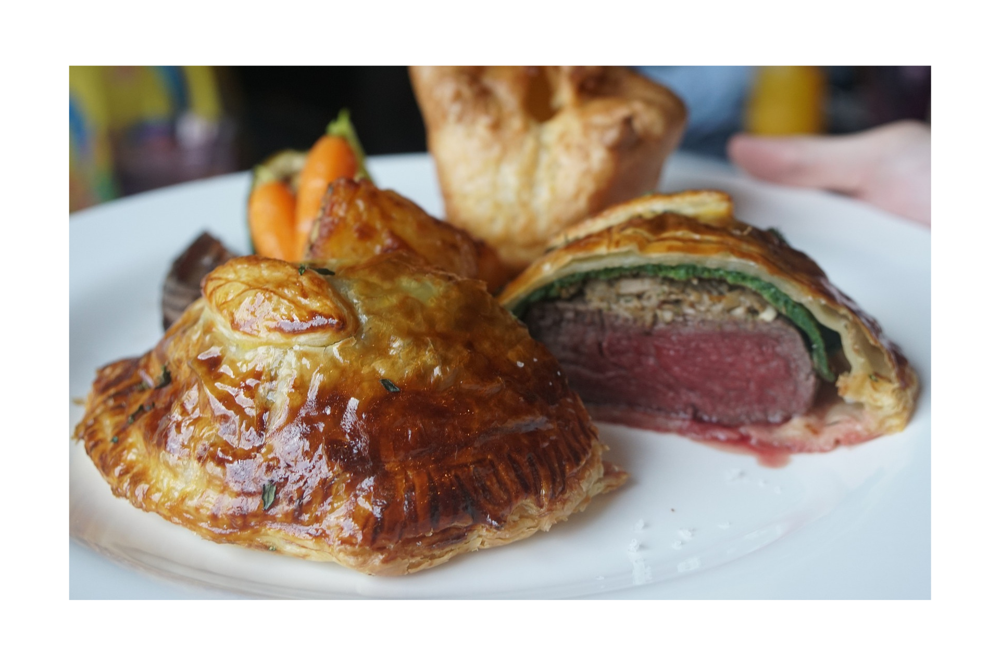

Beef Wellington

Description
This is another classic dish from French quisine. It is rich in both taste and calories, and for that reason may be served with just some vegetables like asparagus or Brussel sprouts. The preparation takes some time and planning. It is important to keep the beef fillet chilled to keep it in shape and have its outer layers stick closer to the meat. As for french pastry, one could make it or buy ready-made frozen sheets which can defrost in room temperature in less than 30 mins. A good gravy makes an essential accessory to beef Wellington. It is preferably based on madeira or red wine. And remember that Wellington needs resting about 10 minutes after being taken out from the oven.
Ingrediences
- a good beef tenderloin about 1 kg with fat trimmed off
- 250 g chessnut or mixed wild mushrooms
- splash of olive oil
- some good mustard
- 50 g butter
- fresh thyme
- clove of garlic
- one onion
- 100ml dry white wine
- 12-15 slices of prosciutto crudo or serano ham
- 500 g puff pastry
- 2 yokes
- tbsp of flour for dusting
- coarse salt and pepper
Steps
- Preheat oven to 220oC.
- Brush the meat with olive oil, season generously med salt and pepper.
- Sear the tenderloin in the frying pan or a skillet for 2-3 minutes on each side til it gets brown.
- Brush it with mustard, let cool, and then put in the fridge for 20 minutes.
- Prepare mushroom duxelles: finely chop the mushrooms, onion, and garlic until you get the texture of coarse breadcrums
- Saute mushroom with onion, garlic, and fresh thyme until all the mosture is damped
- Season duxelles, add wine, and let the mixture cook until the wine is absorbed, remove thyme and let it cool
- Roll out plastic wrap and place slices of prosciouto so that they overlap.
- Spread the mushroom duxelles over prosciutto leaving free edges on each side
- Use the cling film’s edges to draw the prosciutto around the fillet, roll it into a sausage shape, twisting the ends of cling film to tighten it as you go.
- Let it chill in the fridge for 30 minutes
- Lay out sheets of puff pastry, place the fillet in the centre, brush the edges with egg yoke and water, put sheets of pastry on top and around the tenderloin. Press the edges to close and tighten pastry round the meat.
- Seal the edge with a fork og an edge of a spoon.
- Glaze over with egg yoke, press the decorative markings taking care not to cut through the pastry.
- Chill the beef in the fridge minimum 30 minutes
- Stake it in the oven for 20-25 mins for medium-rare beef, 30 mins for medium. Allow to stand for 10 mins before serving in thick slices.